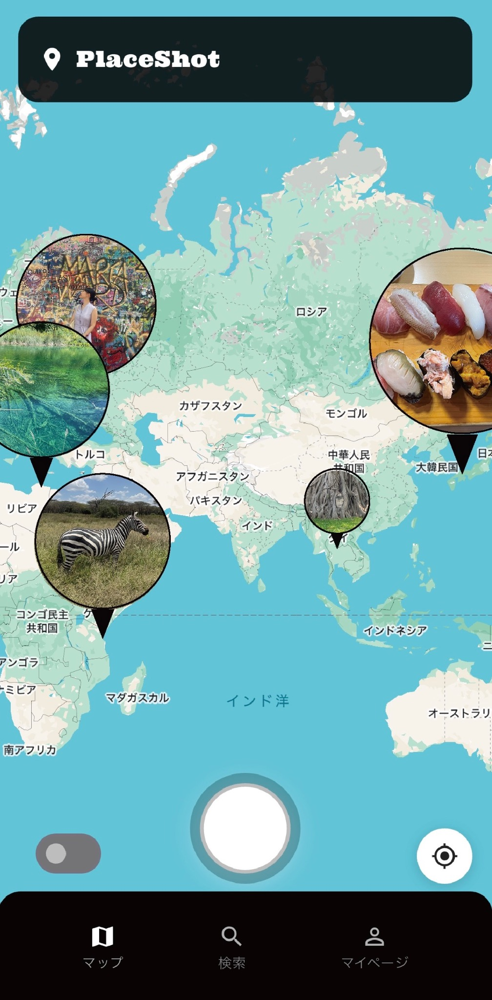

その場で撮ってシェア
今いる場所で撮った写真を、コメント付きで友達に共有できます。
Photo × Friends × Map
PlaceShotは、今いる場所で撮った写真を地図に残せるアプリです。 友達の写真ピンを見ながら、行った場所・好きな場所・思い出の場所を楽しく共有できます。

Features
今いる場所で撮った写真を、コメント付きで友達に共有できます。
投稿した写真が地図上に表示され、思い出の場所がひと目でわかります。
フォローした友達の写真ピンから、行ってみたい場所や近くの思い出を発見できます。
Share the moment
カフェ、旅行先、放課後の寄り道、何気ない散歩道。 PlaceShotなら、その瞬間の写真が場所と一緒に残るので、あとから見返しても、友達と話しても楽しいマップになります。